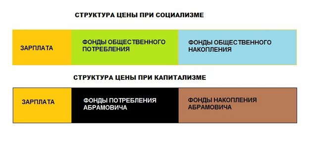

http://ars-el-scorpio.livejournal.com/53153.html
El Scorpio
Недовыплаченное
Порою на просторах наших интернетов в спорах о преимуществах и недостатках социалистической системы в ответ на тезис о бесплатности ряда социальных благ можно увидеть встречное утверждение. Дескать, на самом деле советский режим самым беспардонным образом обманывал доверчивых граждан, обеспечивая оные блага за их же счёт тем, что начислял меньше заработной платы, чем они наработали. "Недовыплачивал".
Однако, согласно принципам диалектики, в контексте спора данный антитезис как бы говорит нам, что его величество Капитализм (в отличие от Социализма) оплачивает наёмным работникам их труд честно и полностью. Но если посмотреть, как в финансовом плане делится результат труда (стоимость конечного продукта/услуги), обнаруживается интересная и очень неприятная для адептов единственно верного Капиталистического учения вещь. Вот как оно делится.
1. Это наша зарплата, порою любимая, а порою — смешная. Та самая, без которой за "дядю" никто и палец о палец не ударит. Правда, из этой зарплаты тут же вполне официально и совершенно законно вычитается (везде, даже в СССР) какая-то часть в виде налогов и страховок.
2. Текущие расходы предприятия. Закупка сырья и материалов, оплата электричества и коммунальных услуг, обслуживание оборудования, отчисления в амортизационный фонд. В общем, всё то, без чего предприятие быстро остановится и надолго прекратит своё существование.
3. Расширение предприятия. Закупка нового оборудование (не на замену изношенному в ноль — на это тратятся деньги амортизационного фонда — а вообще нового), приобретение активов (акций) других предприятий и прочие действия, которые увеличивают стоимость предприятия. Ту самую стоимость, которую владелец получит наличкой, если решит продать своё дело (частично или полностью). А работник от этой части своего труда не получает ровным счётом ничего.
4. Самое интересное — чистая прибыль, которая (наравне с п.3) формируется из прибавочной стоимости товара (услуги). То есть, приносимая владельцам прибыль как раз и составляет ту самое "недовыплачиваемую" работникам часть зарплаты.
Поскольку при социализме юридически владельцами всех предприятий были все граждане, то любые дивиденты ("недовыплаченное" напрямую) действительно использовались в виде социальных благ — здравоохранения, образования, защиты (армия, милиция), развития науки и культуры, инвестиций (строительство новых предприятий) и т.д.
Однако, при капитализме всё намного хуже -— ведь деньги из пп. 3-4 обходят и работника, и государство десятой дорогой. Все социально значимые задачи обеспечиваются государством только за счёт удержанных с граждан налогов (см. п.1), а то и вовсе оплачиваются самими гражданами. Разумеется, подоходные налоги платят не только работники предприятий, но и владельцы, однако любой буржуй знает сорок сравнительно честных способов сокрытия прибыли. И этот буржуй на недовыплаченные работнику деньги может обеспечить себе и своей семье отдельную школу, больницу, охрану и прочие стороны красивой жизни.

26/11/2009